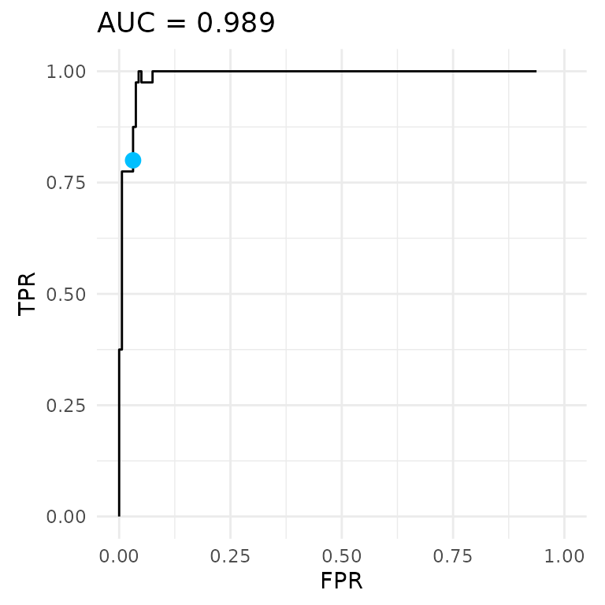
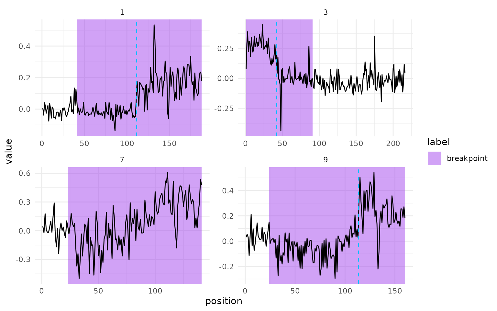

Neuroblastoma copy-number profiles
case-study-neuroblastoma.RmdThis case study learns penalties for real copy-number data and compares the four learners with an unsupervised penalty. The data are the neuroblastoma profiles used in Toby Hocking’s introduction to supervised changepoint detection.
The data
Each profile is a tumour sample measured on a microarray.
profiles has the log ratio of each probe, which is
proportional to copy number, with its chromosome and its position in
base pairs. annotations has the labels an expert drew: a
genomic region from min to max, labelled
breakpoint (at least one change) or normal (no
change). Both names are in
penaltyLearning::change.labels.
data(neuroblastoma, package = "neuroblastoma")
profiles = data.table(neuroblastoma$profiles)
annotations = data.table(neuroblastoma$annotations)
profiles
#> profile.id chromosome position logratio
#> <fctr> <fctr> <int> <num>
#> 1: 8 1 809681 -0.017417053
#> 2: 8 1 928433 0.066261442
#> 3: 8 1 987423 0.067638717
#> 4: 8 1 1083595 0.042644337
#> 5: 8 1 1125548 0.005759269
#> ---
#> 4616842: 182 Y 17301193 0.085424656
#> 4616843: 182 Y 18417614 0.113700499
#> 4616844: 182 Y 20840077 0.060739158
#> 4616845: 182 Y 24282249 0.073134705
#> 4616846: 182 Y 25746303 0.053806444
annotations
#> profile.id chromosome min max annotation
#> <fctr> <fctr> <int> <int> <fctr>
#> 1: 213 11 53700000 135006516 normal
#> 2: 333 11 53700000 135006516 normal
#> 3: 393 11 53700000 135006516 normal
#> 4: 148 11 53700000 135006516 normal
#> 5: 402 11 53700000 135006516 normal
#> ---
#> 3414: 62 4 0 50400000 normal
#> 3415: 445 4 0 50400000 normal
#> 3416: 193 4 0 50400000 normal
#> 3417: 99 4 0 50400000 normal
#> 3418: 48 4 0 50400000 normalOne sequence per chromosome
A changepoint problem is one chromosome of one profile, and only labelled chromosomes can be used for training. To keep the build fast, the task uses 200 of them, each with 20 to 300 probes.
setkey(profiles, profile.id, chromosome, position)
setkey(annotations, profile.id, chromosome)
sizes = profiles[, .(n_probes = .N), by = .(profile.id, chromosome)]
labelled = unique(annotations[, .(profile.id, chromosome)])
problems = sizes[labelled, on = .(profile.id, chromosome), nomatch = NULL]
problems = problems[n_probes >= 20 & n_probes <= 300]
nrow(problems)
#> [1] 2111
set.seed(1)
problems = problems[sort(sample(.N, 200L))]The labels are in base pairs, but a TaskCpt counts
positions along the signal. A change between probes j and j + 1
sits at the midpoint of their positions, m_j. A region from min to
max holds the changes with min < m_j \le max. So
start is the number of midpoints at or below
min, and end is the number at or below
max. findInterval() counts them. This mapping
reproduces the target intervals in penaltyLearning’s own processed
neuroblastoma data exactly.
signal = vector("list", nrow(problems))
label = vector("list", nrow(problems))
for (i in seq_len(nrow(problems))) {
problem_id = problems[i, .(profile.id, chromosome)]
probes = profiles[problem_id]
regions = annotations[problem_id]
mid = (probes$position[-nrow(probes)] + probes$position[-1L]) / 2
signal[[i]] = probes$logratio
label[[i]] = data.table(
start = findInterval(regions$min, mid),
end = findInterval(regions$max, mid),
label = as.character(regions$annotation)
)
}
task = TaskCpt$new(
id = "neuroblastoma", backend = data.table(logratio = signal, label = label),
target = "label", sequence = "logratio", label_type = "changepoint"
)
task
#>
#> ── <TaskCpt> (200x1) ───────────────────────────────────────────────────────────
#> • Target: label
#> • Properties: -The row ids of the task are 1 to 200, in the order of
problems.
Benchmark
Kmax = 5 lets each chromosome have up to five changes.
The MMIT and MMIF learners join the benchmark when the mmit package is
installed.
kmax = 5L
learners = list(
lrn("changepoint.intregrcv", Kmax = kmax),
lrn("changepoint.xgboost.aft", Kmax = kmax)
)
if (requireNamespace("mmit", quietly = TRUE)) {
learners = c(learners, lrns(c("changepoint.mmit", "changepoint.mmif"), Kmax = kmax))
}The benchmark runs three-fold cross-validation with the same folds for every learner, scored by label error and AUC.
measures = msrs(c("changepoint.label_error", "changepoint.auc"))
set.seed(1)
design = benchmark_grid(task, learners, rsmp("cv", folds = 3L))
bmr = benchmark(design)
scores = bmr$aggregate(measures)[, .(learner_id, changepoint.label_error, changepoint.auc)]
scores
#> learner_id changepoint.label_error changepoint.auc
#> <char> <num> <num>
#> 1: changepoint.intregrcv 0.03022765 0.9913611
#> 2: changepoint.xgboost.aft 0.06512890 0.9895433
#> 3: changepoint.mmit 0.04515302 0.9827826
#> 4: changepoint.mmif 0.04515302 0.9912645An unsupervised baseline
Without labels, a common choice is a BIC-style penalty, \lambda = \log n for a sequence of n probes, so \log
\lambda = \log \log n. It needs no training, so the baseline is a
PredictionCpt built by hand for each test fold. A hand-made
prediction records no Kmax, so extra gives it
the same cap as the learners.
n_probes = lengths(signal)
folds = design$resampling[[1L]]
baseline = list()
for (i in seq_len(folds$iters)) {
rows = folds$test_set(i)
prediction = PredictionCpt$new(
task = task, row_ids = rows,
response = log(log(n_probes[rows])),
extra = list(Kmax = rep(kmax, length(rows)))
)
baseline[[i]] = as.data.table(as.list(prediction$score(measures, task = task)))
}
baseline = rbindlist(baseline)
scores = rbind(scores, data.table(learner_id = "BIC baseline", baseline[, lapply(.SD, mean)]))
scores
#> learner_id changepoint.label_error changepoint.auc
#> <char> <num> <num>
#> 1: changepoint.intregrcv 0.03022765 0.9913611
#> 2: changepoint.xgboost.aft 0.06512890 0.9895433
#> 3: changepoint.mmit 0.04515302 0.9827826
#> 4: changepoint.mmif 0.04515302 0.9912645
#> 5: BIC baseline 0.10500528 0.9922840The baseline is scored on the same three test folds and averaged the same way. Its penalty depends only on the number of probes, while a learned penalty also follows the noise level of each profile, which the features measure. All four learners make fewer label errors than the baseline. The AUCs are all close to 1, so the baseline orders the sequences about as well as the learners do. Its penalties sit at the wrong level, which only the label error at the predicted penalties shows.
ROC curve and profiles
The ROC curve below pools the cross-validated predictions of
changepoint.xgboost.aft, the second learner in the
design.
xgb_prediction = bmr$resample_result(2L)$prediction()
autoplot(xgb_prediction, task = task, type = "roc")
Four profiles with a breakpoint label show the changes
those penalties select. problems[shown] gives their profile
and chromosome.
has_breakpoint = logical(length(label))
for (i in seq_along(label)) {
has_breakpoint[i] = any(label[[i]]$label == "breakpoint")
}
shown = head(which(has_breakpoint), 4L)
problems[shown]
#> Key: <profile.id, chromosome>
#> profile.id chromosome n_probes
#> <fctr> <fctr> <int>
#> 1: 5 17 188
#> 2: 8 2 216
#> 3: 22 17 141
#> 4: 28 17 160Each panel shows one chromosome, its labelled regions and dashed lines at the changes selected by the penalty predicted while it was in the test fold.
autoplot(xgb_prediction$filter(shown), task = task)